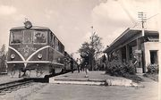
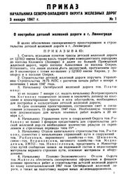
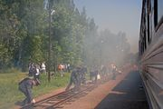
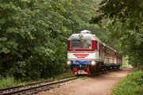
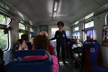
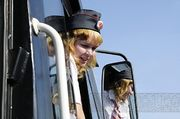
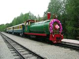
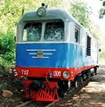
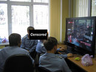

Детская железная дорога
«
Есть такая страна на свете,
Где в своих поездах разъезжают дети.
В поездах настоящих — с дымом, паром,
C машинистом, кондуктором и кочегаром.
»
— Джанни Родари
«
Любые испытания готовы мы пройти,
Большому делу учимся на маленьком пути.
»
— Гимн одной из ДЖД
Детская железная дорога (ДЖД, Малая %city name%-ская Железная Дорога) — небольшой участок узкоколейной железной дороги из пары-тройки (иногда и побольше) станций, на которых работают школотники в возрасте от 10 до 17 лет. Обычно работает лишь летом, но есть и особо суровые юные железнодорожники, ДЖД которых работает и на зимних каникулах (Например, ДЖД города Запорожье). Также детскими железными дорогами называют миниатюрные рельсы с паровозиками, которые можно собрать и гонять по квартире. Подробнее тут.
Ну и наконец были, а кое-где и есть, парковые аттракционы, которые тоже по ошибке называют детскими железными дорогами, но детей там не обучают. На них катают уж совсем молокососов, которые, нанюхавшись ЖД-романтики, могут подрасти и продолжить профильное образование на настоящих ДЖД. Многие из этих аттракционов являются бывшими ДЖД, закрытыми в девяностые.
Содержание
- История
- Суть
- Процесс обучения
- Контингент
- Учащиеся
- Инструкторы
- Плюсы
- Минусы
- Галерея
- Ссылки
- См. также
История

Так оно выглядело 50 лет назад. Кстати, тепловоз чехословацкий, вагоны польские. ПионЭры совейские
Первой ДЖД считается линия, построенная во времена совка в 30-е годы в Тбилиси. Но до этого была другая - да еще и электрифицированная, построенная в парке Горького в Default City, которую построила... сама школота (что подтверждается тем фактом, что их могло ударить током). Идея понравилась тогдашнему правительству, в итоге за 5 лет по всей 1/6 части суши было построено 15 дорог. Но тут ВНЕЗАПНО жахнула Вторая мировая война, и стало как-то совсем не до паровозиков. После о них вспомнили, так как было убито большое количество населения и был нужен некий инкубатор для будущих машинистов/проводников/инженегров. Каждый год стали открывать по одной или несколько ДЖД, и в итоге к середине 80-х по СССР работало больше 50 детских железных дорог. Идею оценили правители не только Союза Нерушимого, но и других соцстран — Болгарии, ГДР, Чехословакии, Китая, Кубы и других. Вообще, кому интересно, как это выглядело в СССР, может глянуть фильм «Поезд со станции детства», который прекрасно ищется на этих ваших торрентах. Короче говоря, всё было замечательно, но тут неожиданно 19 августа 1991 по телевизору показали балет. В 90-х почти все ДЖД Грузии, Армении и других стран СНГ были закрыты, и они остались только в России и нескольких крупных городах Украины, и ещё в Минске и Берлине. Остальные были снесены, либо оставлены как узкоколейки, на которых работают взрослые. Goodnight, sweet prince.
Сейчас работает (с переменным успехом) 25 отрезков узкоколеек разной степени раздолбанности в России, из которых 21 была построена в Совке, лишь 3 возведены в тупинские нулевые. А для ДЖД в Питере был аж построен новый участок от Купчино до Пушкина, никому найух не нужный, ибо идёт параллельно большой дороге с одной стороны и автотрассе с другой. Не сильно нужны Якунину новые кадры, так-то. C другой, в остальных частях экс-Совка они нужны ещё меньше, и там ДЖД умеют только закрывать.
Суть

Так оно всё начиналось
Основная роль ДЖД — оторвать детей с улицы/от компьютера и показать им суть железной дороги со всеми её аббревиатурами, суетой, точностью и другими особенностями, и выяснить, интересует ли их это дело или нет. Те, кто заинтересовался, могут взять целевое направление (возможность поступления в вуз с более низкими баллами) и после института пойти на работу в РЖД либо сопутствующие структуры.
Обычно туда приходят по приглашению друга/знакомого/одноклассника в 10-11 лет либо инструкторы приходят в школы, где и приглашают. Однако прийти можно в любом возрасте, но после 18 оттуда вытуривают (некоторых особенных личностей оставляют).
За свою безопасность беспокоиться пассажирам не стоит — за всеми действиями машиниста и дежурного по станции следят инструкторы.
Трассировка типичного ДП состоит из нескольких станций, чаще всего двух конечных, имеющих путевое развитие и предназначенных для операций по приёму, отправке, обг…, промежуточной платформы между ними и депо, предназначенного для того, чтобы паровозик не замёрз[1].
Процесс обучения
Учёба на ДЖД состоит из двух основных частей — изучения матчасти осенью-зимой-весной в течение пяти (обычно) лет учёбы и практики летом после каждого года. Первые два — общий курс, на них изучаются значения сигналов светофоров, техника безопасности, типы вагонов и другие основы. На третьем курсе проходят диспетчерские приказы, графики движения поездов, ну а после сдачи экзамена допускают к работе дежурным по станции. На последних двух изучают строение локомотива, чертежи, кнопки на пульте. После сдачи экзамена допускают к работе помощником машиниста и самим машинистом соответственно.
Приходить на занятия никто не требует, можно спокойно пинать МПХ все 5 лет. Но сдавать экзамены нужно каждый год, поэтому у многих в апреле начинается беготня в поисках конспекта. Если экзамены не сдать, не допускают летом к практике по профессии, на которой учился.
Один день из работы ДЖД выглядит так:
- Приезд инструкторов и учащихся на узкоколейку.
- Планёрка, раздача специальностей, выдача еды.
- Запуск локомотива. Длительность процесса зависит от состояния локомотива.
- Собственно работа. Процесс работы зависит от количества пришедшего народа. Если людей мало — нередко приходится совмещать, иногда доходит до жутких комбинаций вроде начальник поезда-бригадир-проводник-экскурсовод, и наоборот — бывают моменты, когда людей уже пихать некуда. Но обычно чистой работы там минут 15-20 из 4 часов, остальное — болтовня, покатушки, посиделки в буфете (при его наличии) и другое.
- Планёрка, выставление оценок, ругань/похвала в сторону отличившихся личностей.
Контингент
Учащиеся

Так оно всё начиналось

Так оно всё начиналось

Так оно всё начиналось

Так оно всё начиналось
- Транспортные фанаты. Воспринимают ДЖД исключительно как клуб по интересам, где можно поменяться билетиками, помериться друг с другом в стиле «я был там, а ты там не был». По мере взросления им надоедает заниматься фигнёй, и они переходят в одну их следующих категорий, либо вообще уходят с дороги. В особо тяжких случаях остаются такими и впоследствии. Нередко среди них встречаются заядлые зацеперы (%username%_flencer joined the chat), что, учитывая постоянную долбёжку мозга инструкторами техникой безопасности, доставляет).
- Любители железнодорожного транспорта. В отличие от предыдущей категории не занимаются ерундой, а увлекаются чем-то по-настоящему нужным и интересным, например, строением локомотива. Нередко участвуют в регулярно проводимых слётах, ИЧСХ, побеждают. Когда те вырастают, из них получаются неплохие специалисты, с улыбкой вспоминающие ДЖД как часть своего детства.
- ЗамНОДЫ. Люди, активно участвующие в жизни на своей ДЖД. Да-да, на фотках с детьми в железнодорожной форме чаще всего именно они. Состоят в т. н. «Совете смены» (отсюда и ответ на вопрос о количестве звёзд на погонах), куда очень просто попасть (достаточно подойти к своему инструктору и попроситься). Многого инструкторы не требуют, достаточно сидеть с умным видом и слушать. Поэтому надо быть фееричной личностью, чтобы оттуда выгнали. Самых ответственных позднее берут в Совет дороги, где для достижения успеха достаточно просто трепать языком.
- Задроты. Понимают только теорию, поэтому часто все 5 лет обучения работают только диктором или проводником. Из них могут выйти хорошие преподаватели в профильных техникумах/институтах. Однако чаще они возвращаются на малую дорогу, но уже в роли инструктора.
- Хитрожопые. Приходили на ДЖД, сдавали экзамены за первый год, получали удостоверение вместе с халявным проездом на электричках и забивали на учёбу. После ребрединга МПС в РЖД бесплатный проезд отменили, поэтому подобные личности перевелись.
- Быдло. Да, и тут они тоже бывают. Часто пьют и курят, иногда даже на самой дороге. Их все откровенно презирают, но виду обычно не подают. Инструкторы от таких стремятся всеми силами избавиться и, однако, избавляются. Со временем уходят с дороги и окончательно спиваются. Либо спиваются прямо там.
- Ревизоры. Гибрид быдла (94%), задротов (4%), хитрожопых (1%) и нормальных людей™ (0.001%) с сильно завышенным ЧСВ. Подвид особо свиреп на Минской ДЖД (во главе с ЦыбаЕДом), однако до некоторых отдаленных ДЖД ещё не добрался. Основная работа заключается в заёбывании всех проводников и личностей с ещё не сильно запущенным ФГМ, даже когда они не на «работе». Основные отличия: маленький рост, прыщавая и хитрая морда лица, 2+ звёздочек на погонах.
- Девушки. Чаще всего соотношение кунов и тян примерно 20:1, и, как и во всех мужских коллективах, большинство парней стремится начать отношения™. Обычно бессмысленно, ибо у объекта обожания уже есть пара, либо отношения их не интересуют вовсе. К тому же девушки часто уходят примерно после второго-третьего года, и остаются только совсем уж маленькие девочки десяти-одиннадцати лет на радость Педобиру.
- Нормальные люди™. И они есть. Ничем особо не выделяются, поэтому и писать нечего.
Инструкторы
- Прикреплённые. Появляются на ДЖД только тогда, когда работает сама дорога (обычно летом, реже осенью), в остальное время работают на большой дороге либо учатся в железнодорожных учебных заведениях. Зачастую способны поведать много интересного из своего богатого опыта, но иногда представляют из себя настолько некомпетентное нубьё, что становится неясным, кто за кем тут должен следить. Впоследствии с возрастом и/или желанием могут перейти в следующую категорию. Но желания, как правило, нет, ибо детскодорожные зарплаты (как и у всех преподавателей в этой стране) довольно невысокие — 15-30 т.р. Поэтому на ДЖД в основном работают пенсионеры, которым на «большой» дороге уже тяжело, да и медкомиссию порой не пройти.
- Постоянные. Учат не только летом, но и круглый год. Как и любые педагоги, бывают разные. Одни любят своих учеников и являются настоящими мастерами своего дела, способные обучить и научить любого. Другим на всё и на всех глубоко пофиг и держат их лишь по той причине, что больше работать некому. В ДС-2 известен случай, когда один из них пришёл пьяным и наблевал в тамбуре. Но это скорее исключение, чем правило. Лучшие переходят в следующие категории.
- Инструкторы смен. Прокачанная версия предыдущих, но не принимают активного участия в, собственно, работе дороги. Летом занимаются административно-организационной деятельностью, зимой учат ньюфагов азам: примитивным профессиям вроде проводника-стрелочника-вагонника и прочим общим принципам работы жд — навроде флажковой сигнализации, работы светофоров(СЦБ), общего принципа работы подвагонного оборудования. Зачастую последние пункты являются тупо вольным пересказом программы занятий «Введение в специальность» ЖД ПТУ\ВУЗов.
- Начальники. Занимаются тем, что управляют всей выстроенной системой, нанимают инструкторов, выгоняют либо награждают учащихся, организовывают праздники, помогают и мешают юным железнодорожникам со справками и многим другим. Удивительно, но обычно лиц с завышенным ЧСВ среди них нет, потому что ДЖД одновременно и ЖД, и детское образовательное учреждение, рулить таким сложно, и места для ЧСВ в голове остаётся совсем мало. От других инструкторов отличаются большим количеством звёзд на погонах и тем, что занятий не проводят.
Плюсы
- На весенних и осенних каникулах бесплатно можно сходить на экскурсию в ж.д. музеи, либо попасть в депо или в диспетчерскую вокзала, куда обычно посторонних не пускают.
- На некоторых специальностях (проводник, контролёр и т. п.) юным железнодорожникам приходится общаться с пассажирами, тем самым развивая навыки коммуникации с другими людьми, что пригодится в жизни. Алсо, развивается навык работы в коллективе.
- Также является достаточно интересным и доступным аттракционом. Ну куда ещё можно сходить с ребёнком на полчаса отдохнуть за 180 рублей (цена в СПБ) или вообще бесплатно в праздники либо при наличии знакомых, которые там работают/учатся?
- А ещё профит получают родители юных железнодорожников в виде увеличенного ЧСВ. На детской железной дороге работает — не хуи пинает!
- На день железнодорожника, открытие, закрытие нередко приезжают журналисты с телевидения, поэтому у юных железнодорожников есть возможность засветиться в зомбоящике. Также часто приезжают Высокие Гости™, доставляющие своей тотальной безграмотностью.
- Ещё профит получают бывшие работники большой ЖД, когда тех выгоняют с работы. Ибо работать больше по профессии нигде не берут.
- Конечно же, профит получает Луркоморье и форумы/чаты интернета, так как люди, работающие на ДЖД, на каникулах заняты и пишут намного реже.
- Праздники же! Открытие дороги, день железнодорожника, закрытие, день знаний, новый год. Концерты, развлечения, подарки и халявка в комплекте.
- В зависимости от города, удачи и степени наглости, по удостоверению можно кататься бесплатно на электричках! Алсо в той стране в перечне льготных категорий на бесплатный проезд (причем не только на электричках!) были ВСЕ кто хоть косвенно имел отношение к МПС, т.е. в том числе и южики.
Минусы
Да, они тоже присутствуют
- Не имея особых познаний (всё же детям не матан рассказывают, а общие и интересные факты), но обладая невъебенным ЧСВ, лезут в различные интернет-дискуссии. Если бородатые дядьки-машинисты на узкоспециализированных форумах, как правило, смеются и посылают на йух школьника с его высерами, то на прочих двачах и жж посетители развешивают уши и верят школьнику на слово, повышая его ЧСВ, взамен получая кучу недостоверной инфы и домыслов, а иногда и просто вранья. Ну и не стоит забывать, что ДЖД это лагеря летнего пребывания, так что по вечерам им ничто не мешает раковать.
- Как следствие — эта статья.
- Мамочки и папочки не знают, чем занимается их сына целый день, так что малолетний долбоеб может сказать, что пойдет в кружок, а на деле — сосать пивасик в соседнем квартале.
- Даже если он дойдет до пункта назначения, ничто не мешает ему нажраться после работы. Даже если до того вообще ничем подобным не увлекался. Просто за компанию. Как сказал один знакомый аффатару алкаш: «Неизвестно, какое количество ЮЖД спилось к окончанию дороги, но то что я пил только здесь и не один — это точно!»
- И прочие минусы пионерских лагерей.
Существует существовал (см. следующий пункт) неиллюзорный шанс потерять конечность, а то и погибнуть — прецеденты были.- Вырасти инфантильным жлобом: из-за повального страха РЖД перед судами вмешательство инструкторов в работу на некоторых дорогах достигает неимоверных по пиздецовости высот — навроде того, что на дороге в Питере даже составы осаживать детям не дают (олдфаги недогуе).
- Педобиры. А вы как думали? Десятки детей — и в том числе девочек, вах, вах — в железнодорожной форме — это чревато. Прецедент, опять же, был — пруфы ищите в передаче «Следствие вели...»
Галерея

Цилиндрический детский паровозик в Новосибирске

Усредненный представитель серии ТУ2

Сферические работники в вакууме
Ссылки
См. также